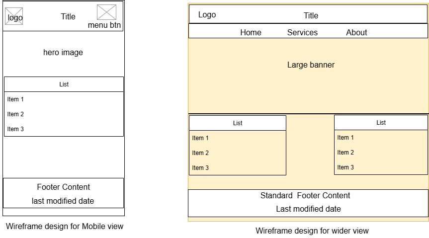

Call Your Neighbour for Service - Site Plan
Site Name
Call Your Neighbour for Service — This name captures the core function of the site: connecting people with local neighbors who can help with everyday tasks. It emphasizes community, simplicity, and human connection.
Site Purpose
The site connects individuals in neighborhoods who need help (e.g., changing bulbs, running errands, fixing electronics) with those willing to offer such services voluntarily or at minimal cost. It aims to strengthen community ties and empower everyday acts of service.
Scenarios
- How can I request help from a neighbor for basic home repair?
- Where can I see the list of available neighbors and what services they offer?
Color Schema
- #0A369D – Used for headings, titles, and main navigation (deep blue).
- #FFD447 – Used as an accent color for buttons, highlights, and banner backgrounds (warm yellow).
Typography
- Segoe UI – Used for body text and main navigation for readability.
- Georgia – Used for headings to give contrast and elegance.
Wireframe
Mobile View and Large (Desktop) View for the Home Page:

Wireframe mockup showing both mobile and desktop layouts for the homepage.